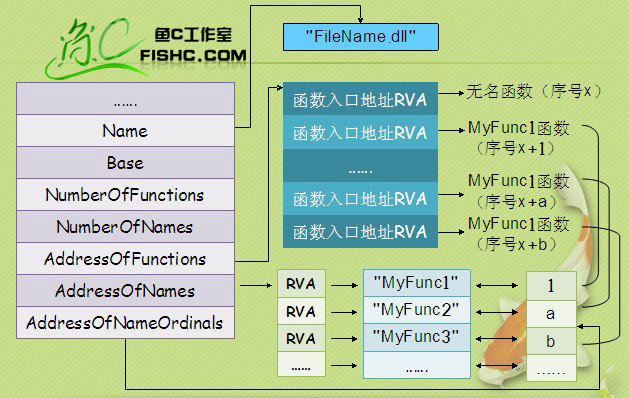
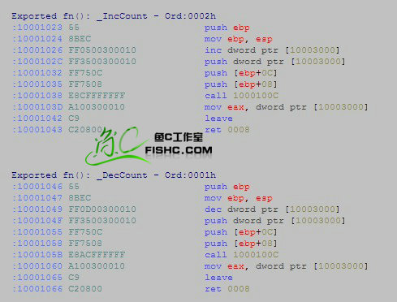
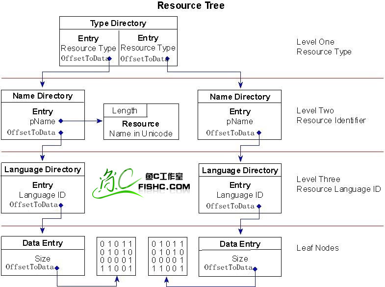
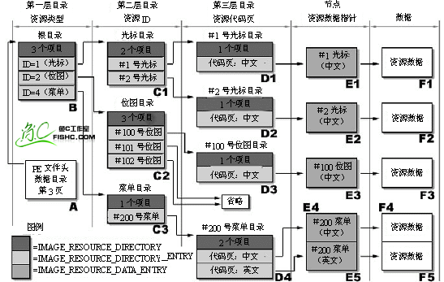

| +0h | WORD | e_magic | Magic DOS signature MZ(4Dh 5Ah) DOS可执行文件标记 |
| +2h | WORD | e_cblp | Bytes on last page of file |
| +4h | WORD | e_cp | Pages in file |
| +6h | WORD | e_crlc | Relocat ions |
| +8h | WORD | e_cparhdr | Size of header in paragraphs |
| +0ah | WORD | e_minalloc | Minimun extra paragraphs needs |
| +0ch | WORD | e_maxalloc | Maximun extra paragraphs needs |
| +0eh | WORD | e_ss | intial(relative)SS value DOS代码的初始化堆栈SS |
| +10h | WORD | e_sp | intial SP value DOS代码的初始化堆栈SP |
| +12h | WORD | e_csum | Checksum |
| +14h | WORD | e_ip | intial IP value DOS代码的初始化指令入口[指针IP] |
| +16h | WORD | e_CS | intial(relative)CS value DOS代码的初始堆栈入口 |
| +18h | WORD | e_lfarlc | File Address of relocation table |
| +1ah | WORD | e_ovno | Overlay number |
| +1ch | WORD | e_res[4] | Reserved words |
| +24h | WORD | e_oemid | OEM identifier(for e_oeminfo) |
| +26h | WORD | e_oeminfo | OEM information;e_oemid specific |
| +29h | WORD | e_res2[10] | Reserved words |
| +3ch | DWORD | e_lfanew | Offset to start of PE header 指向PE文件头 |
| +0h | Signature | 文件签名 |
| +4h | IMAGE_FILE_HEADER | FileHeader |
| +18h | IMAGE_OPTIONAL_HEADER32 | OptionalHeader |
| +04h | WORD | Machine | 运行平台 |
| +06h | WORD | NumberOfSections | 文件的区块数目 |
| +08h | DWORD | TimeDateStamp | 文件创建日期和时间 |
| +0Ch | DWORD | PointerToSymbolTable | 指向符号表(主要用于调试) |
| +10h | DWORD | NumberOfSymbols | 符号表中符号个数(同上) |
| +14h | WORD | SizeOfOptionalHeader | IMAGE_OPTIONAL_HEADER32 结构大小 |
| +16h | WORD | Characteristics | 文件属性 |
(1)Machine:可执行文件的目标CPU类型
| value | Meaning |
| IMAGE_FILE_MACHINE_I386 0x014c |
x86 |
| IMAGE_FILE_MACHINE_IA64 0x0200 |
Intel Itanium |
| IMAGE_FILE_MACHINE_AMD64 0x8664 |
x64 |
(2)NumberOfSection: 区块的数目。(注：区块表是紧跟在 IMAGE_NT_HEADERS 后边的)
(3)TimeDataStamp: 表明文件是何时被创建的。
这个值是自1970年1月1日以来用格林威治时间(GMT)计算的秒数，这个值是比文件系统(FILESYSTEM)的日期时间更加精确的指示器。如何将这个值翻译请看：http://home.fishc.com/space.php?uid=9&do=blog&id=555
提示：VC的话可以用_ctime 函数或者 gmtime 函数。
(4)PointerToSymbolTable: COFF 符号表的文件偏移位置，现在基本没用了。
(5)NumberOfSymbols: 如果有COFF 符号表，它代表其中的符号数目，COFF符号是一个大小固定的结构，如果想找到COFF 符号表的结束位置，则需要这个变量。
(6)SizeOfOptionalHeader: 紧跟着IMAGE_FILE_HEADER 后边的数据结构(IMAGE_OPTIONAL_HEADER)的大小。(对于32位PE文件，这个值通常是00E0h；对于64位PE32+文件，这个值是00F0h )。
(7)Characteristics: 文件属性，有选择的通过几个值可以运算得到。( 这些标志的有效值是定义于 winnt.h 内的 IMAGE_FILE_** 的值，具体含义见下表。普通的EXE文件这个字段的值一般是 0100h，DLL文件这个字段的值一般是 210Eh。)小甲鱼温馨提示：多种属性可以通过 “或运算” 使得同时拥有！
The characteristics of the image. This member can be one or more of the following values.
| value | Meaning |
| IMAGE_FILE_RELOCS_STRIPPED 0x0001 |
Relocation information was stripped from the file.The file must be loaded at its preferred base address. If the base address is not available, the loader reports an error. |
| IMAGE_FILE_EXECUTABLE_IMAGE 0x0002 |
The file is executable (there are no unresolved external references). |
| IMAGE_FILE_LINE_NUMS_STRIPPED 0x0004 |
COFF line numbers were stripped from the file. |
| IMAGE_FILE_LOCAL_SYMS_STRIPPED 0x0008 |
COFF symbol table entries were stripped from file. |
| IMAGE_FILE_AGGRESIVE_WS_TRIM 0x0010 |
Aggressively trim the working set. This value is obsolete as of Windows 2000. |
| IMAGE_FILE_LARGE_ADDRESS_AWARE 0x0020 |
The application can handle addresses larger than 2 GB. |
| IMAGE_FILE_BYTES_REVERSED_LO 0x0080 |
The bytes of the word are reversed. This flag is obsolete. |
| IMAGE_FILE_32BIT_MACHINE 0x0100 |
The computer supports 32-bit words. |
| IMAGE_FILE_DEBUG_STRIPPED 0x0200 |
Debugging information was removed and stored separately in another file. |
| IMAGE_FILE_REMOVABLE_RUN_FROM_SWAP 0x0400 |
If the image is on removable media, copy it to and run it from the swap file. |
| IMAGE_FILE_NET_RUN_FROM_SWAP 0x0800 |
If the image is on the network, copy it to and run it from the swap file. |
| IMAGE_FILE_SYSTEM 0x1000 |
The image is a system file. |
| IMAGE_FILE_DLL 0x2000 |
The image is a DLL file. While it is an executable file, it cannot be run directly. |
| IMAGE_FILE_UP_SYSTEM_ONLY 0x4000 |
The file should be run only on a uniprocessor computer. |
| IMAGE_FILE_BYTES_REVERSED_HI 0x8000 |
The bytes of the word are reversed. This flag is obsolete. |
接着我们来谈谈 IMAGE_OPTIONAL_HEADER 结构，正如名字的意思，这是一个可选映像头，是一个可选的结构，但是呢，实际上上节课我们讲解的 IMAGE_FILE_HEADER 结构远远不足以来定义 PE 文件的属性。因此，这些属性在 IMAGE_OPTIONAL_HEADER 结构中进行定义。因此这两个结构联合起来，才是一个完整的 “PE文件结构” 。
那么我们接着就应该顺理成章地来谈谈 IMAGE_OPTIONAL_HEADER32 结构的定义：（啥？结构不会，先看看小甲鱼童鞋的《零基础入门学习C语言》关于结构方面的章节吧~）
typedef struct _IMAGE_OPTIONAL_HEADER{| //Standard fields. | |||
|---|---|---|---|
| +18h | WORD | Magic | 标志字, ROM 映像（0107h）,普通可执行文件（010Bh） |
| +1Ah | BYTE | MajorLinkerVersion | 链接程序的主版本号 |
| +1Bh | BYTE | MinorLinkerVersion | 链接程序的次版本号 |
| +1Ch | DWORD | SizeOfCode | 所有含代码的节的总大小 |
| +20h | DWORD | SizeOfInitializedData | 所有含已初始化数据的节的总大小 |
| +24h | DWORD | SizeOfUninitializedData | 所有含未初始化数据的节的大小 |
| +28h | DWORD | AddressOfEntryPoint | 程序执行入口RVA |
| +2Ch | DWORD | BaseOfCode | 代码的区块的起始RVA |
| +30h | DWORD | BaseOfData | 数据的区块的起始RVA | // NT additional fields. 以下是属于NT结构增加的领域. |
| +34h | DWORD | ImageBase | 程序的首选装载地址 |
| +38h | DWORD | SectionAlignment | 内存中的区块的对齐大小 |
| +3Ch | DWORD | FileAlignment | 文件中的区块的对齐大小 |
| +40h | WORD | MajorOperatingSystemVersion | 要求操作系统最低版本号的主版本号 |
| +42h | WORD | MinorOperatingSystemVersion | 要求操作系统最低版本号的副版本号 |
| +44h | WORD | MajorImageVersion | 可运行于操作系统的主版本号 |
| +46h | WORD | MinorImageVersion | 可运行于操作系统的次版本号 |
| +48h | WORD | MajorSubsystemVersion | 要求最低子系统版本的主版本号 |
| +4Ah | WORD | MinorSubsystemVersion | 要求最低子系统版本的次版本号 |
| +4Ch | DWORD | Win32VersionValue | 莫须有字段，不被病毒利用的话一般为0 |
| +50h | DWORD | SizeOfImage | 映像装入内存后的总尺寸 |
| +54h | DWORD | SizeOfHeaders | 所有头 + 区块表的尺寸大小 |
| +58h | DWORD | CheckSum | 映像的校检和 |
| +5Ch | WORD | Subsystem | 可执行文件期望的子系统 |
| +5Eh | WORD | DllCharacteristics | DllMain()函数何时被调用，默认为 0 |
| +60h | DWORD | SizeOfStackReserve | 初始化时的栈大小 |
| +64h | DWORD | SizeOfStackCommit | 初始化时实际提交的栈大小 |
| +68h | DWORD | SizeOfHeapReserve | 初始化时保留的堆大小 |
| +6Ch | DWORD | SizeOfHeapCommit | 初始化时实际提交的堆大小 |
| +70h | DWORD | LoaderFlags | 与调试有关，默认为 0 |
| +74h | DWORD | NumberOfRvaAndSizes | 下边数据目录的项数，这个字段自Windows NT 发布以来 //一直是16 |
| +78h | IMAGE_DATA_DIRECTORY DataDirectory[IMAGE_NUMBEROF_DIRECTORY_ENTRIES] | 以下为 数据目录表 | |
| 取值 | Windows.inc中的预定义值 | 含 义 |
| 0 | IMAGE_SUBSYSTEM_UNKNOWN | 未知的子系统 |
| 1 | IMAGE_SUBSYSTEM_NATIVE | 不需要子系统(如驱动程序) |
| 2 | IMAGE_SUBSYSTEM_WINDOWS_GUI | Windows图形界面 |
| 3 | IMAGE_SUBSYSTEM_WINDOWS_CUI | Windows控制台界面 |
| 5 | IMAGE_SUBSYSTEM_OS2_CUI | OS2控制台界面 |
| 7 | IMAGE_SUBSYSTEM_POSIX_CUI | POSIX控制台界面 |
| 8 | IMAGE_SUBSYSTEM_NATIVE_WINDOWS | 不需要子系统 |
| 9 | IMAGE_SUBSYSTEM_WINDOWS_CE_GUI | Windows CE图形界面 |
| DWORD | VirtualAddress | 数据的起始RVA |
| DWORD | isize | 数据块的长度 |
| Address | Size | 在Windows.inc中的预定义值 | 对应的数据块 |
| +78h | DWORD+DWORD | IMAGE_DIRECTORY_ENTRY_EXPORT | 导出表RVA |
| +80h | DWORD+DWORD | IMAGE_DIRECTORY_ENTRY_IMPORT | 导入表RVA |
| +88h | DWORD+DWORD | IMAGE_DIRECTORY_ENTRY_RESOURCE | 资源 |
| 3 | DWORD+DWORD | IMAGE_DIRECTORY_ENTRY_EXCEPTION | 异常（具体资料不详） |
| 4 | DWORD+DWORD | IMAGE_DIRECTORY_ENTRY_SECURITY | 安全（具体资料不详） |
| 5 | DWORD+DWORD | IMAGE_DIRECTORY_ENTRY_BASERELOC | 重定位表 |
| 6 | DWORD+DWORD | IMAGE_DIRECTORY_ENTRY_DEBUG | 调试信息 |
| 7 | DWORD+DWORD | IMAGE_DIRECTORY_ENTRY_ARCHITECTURE | 版权信息 |
| 8 | DWORD+DWORD | IMAGE_DIRECTORY_ENTRY_GLOBALPTR | 具体资料不详 |
| 9 | DWORD+DWORD | IMAGE_DIRECTORY_ENTRY_TLS | Thread Local Storage |
| 10 | DWORD+DWORD | IMAGE_DIRECTORY_ENTRY_LOAD_CONFIG | 具体资料不详 |
| 11 | DWORD+DWORD | IMAGE_DIRECTORY_ENTRY_BOUND_IMPORT | 具体资料不详 |
| 12 | DWORD+DWORD | IMAGE_DIRECTORY_ENTRY_IAT | 导入函数地址表 |
| 13 | DWORD+DWORD | IMAGE_DIRECTORY_ENTRY_DELAY_IMPORT | 具体资料不详 |
| 14 | DWORD+DWORD | IMAGE_DIRECTORY_ENTRY_COM_DESCRIPTOR | 具体资料不详 |
| 15 | 未使用 | ||
在执行一个PE文件的时候，windows 并不在一开始就将整个文件读入内存的，二十采用与内存映射文件类似的机制。也就是说，windows 装载器在装载的时候仅仅建立好虚拟地址和PE文件之间的映射关系。当且仅当真正执行到某个内存页中的指令或者访问某一页中的数据时，这个页面才会被从磁盘提交到物理内存，这种机制使文件装入的速度和文件大小没有太大的关系。
但是要注意的是，系统装载可执行文件的方法又不完全等同于内存映射文件。
当使用内存映射文件的时候，系统对“原著”相当忠实，如果将磁盘文件和内存映像比较的话，可以发现不管是数据本身还是数据之间的相对位置它丫丫的都是完全相同的。
而我们知道，在装载可执行文件的时候，有些数据在装入前会被预处理，如重定位等，正因此，装入以后，数据之间的相对位置可能发生微妙的变化。
Windows 装载器在装载DOS部分、PE文件头部分和节表（区块表）部分是不进行任何特殊处理的，而在装载节（区块）的时候则会自动按节（区块）的属性做不同的处理。
一般情况下，它会处理以下几个方面的内容：
对于磁盘映射文件来说，所有的页都是按照磁盘映射文件函数指定的属性设置的。但是在装载可执行文件时，与节对应的内存页属性要按照节的属性来设置。所以，在同属于一个模块的内存页中，从不同节映射过来的的内存页的属性是不同的。
节的起始地址在磁盘文件中是按照 IMAGE_OPTIONAL_HEADER32 结构的 FileAlignment 字段的值进行对齐的，而当被加载到内存中时是按照同一结构中的 SectionAlignment 字段的值对其的，两者的值可能不同，所以一个节被装入内存后相对于文件头的偏移和在磁盘文件中的偏移可能是不同的。
注意，节事实上就是相同属性数据的组合！当节被装入到内存中的时候，相同一个节所对应的内存页都将被赋予相同的页属性， 事实上，Windows 系统对内存属性的设置是以页为单位进行的，所以节在内存中的对齐单位必须至少是一个页的大小。（小甲鱼温馨提示：对于32位操作系统来说，这个值一般是4KB==1000H; 对于64位操作系统这个值一般是8KB==2000H）
在磁盘中就没有这个**，因为在磁盘中排放是以什么为主？肯定是以空间为主导，在磁盘只是存放，不是使用，所以不用设置那么详细的属性。试想想看，如果在磁盘中都是以4KB为大小对齐的话，不够就用0来填充，那么一个只占20字节的数据就要消耗4KB的空间来存放，是不是浪费？有木有？？
对节的尺寸的处理主要分为两个方面：
第一个方面，正如刚刚我们所讲的，由于磁盘映像和内存映像中节对齐存储单位的不同而导致了长度扩展不同（填充的0数量不同嘛~）；
第二个方面，是对于包含未初始化数据的节的处理问题。既然是未初始化，那么没有必要为其在磁盘中浪费空间资源，但在内存中不同，因为程序一运行，之前未初始化的数据便有可能要被赋值初始化，那么就必须为他们留下空间。
有些节并不需要被映射到内存中，例如.reloc节，重定位数据对于文件的执行代码来说是透明的，无作用的，它只是提供Windows 装载器使用，执行代码根本不会去访问到它们，所以没有必要将他们映射到物理内存中。
好了，上边的一些知识相信又是对我们之前学习的一点补充和扩展。大家可能对上边的知识觉得又是眼熟，但又觉得有几分陌生。那是当然哈，小甲鱼教学遵循的思路就是今天的知识今天学好它，明天的东西明天再学！一下子你肯定不能接受那么深的东西，像上边的东西如果放在第一讲来讲解，那么恐怕很多朋友不会继续往下看（一头雾水看下去只能两头雾水，哈~），所以咱学习要遵循循环渐进，有些重点分开来重复讲解，虽然重复，但每次都会往下加深一点来让大家容易接受哈。
我们可以继续了，接下来是节表，也称为区块表：
PE文件中所有节的属性都被定义在节表中，节表由一系列的IMAGE_SECTION_HEADER结构排列而成，每个结构用来描述一个节，结构的排列顺序和它们描述的节在文件中的排列顺序是一致的。全部有效结构的最后以一个空的IMAGE_SECTION_HEADER结构作为结束，所以节表中总的IMAGE_SECTION_HEADER结构数量等于节的数量加一。节表总是被存放在紧接在PE文件头的地方。
另外，节表中 IMAGE_SECTION_HEADER 结构的总数总是由PE文件头 IMAGE_NT_HEADERS 结构中的 FileHeader.NumberOfSections 字段来指定的。续第五讲...
| DWORD | PhysicalAddress | 物理地址 |
| DWORD | VirtualSize | 真实长度，这两个值是一个联合结构，可以使用其中的任何一个，一般是取后一个 |
| DWORD | VirtualAddress | 节区的 RVA 地址 |
| DWORD | SizeOfRawData | 在文件中对齐后的尺寸 |
| DWORD | PointerToRawData | 在文件中的偏移量 |
| DWORD | PointerToRelocations | 在OBJ文件中使用，重定位的偏移 |
| DWORD | PointerToLinenumbers | 行号表的偏移（供调试使用地） |
| WORD | NumberOfRelocations | 在OBJ文件中使用，重定位项数目 |
| WORD | NumberOfLinenumbers | 行号表中行号的数目 |
| DWORD | Characteristics | 节属性如可读，可写，可执行等 |
| IMAGE_SCN_CNT_CODE 0x00000020 |
The section contains executable code. 包含代码，常与 0x10000000一起设置。 |
| IMAGE_SCN_CNT_INITIALIZED_DATA 0x00000040 |
The section contains initialized data. 该区块包含以初始化的数据。 |
| IMAGE_SCN_CNT_UNINITIALIZED_DATA 0x00000080 |
The section contains uninitialized data. 该区块包含未初始化的数据。 |
| IMAGE_SCN_MEM_DISCARDABLE 0x02000000 |
The section can be discarded as needed. 该区块可被丢弃，因为当它一旦被装入后，进程就不在需要它了，典型的如重定位区块。 |
| IMAGE_SCN_MEM_SHARED 0x10000000 |
The section can be shared in memory. 该区块为共享区块。 |
| IMAGE_SCN_MEM_EXECUTE 0x20000000 |
The section can be executed as code. 该区块可以执行。通常当0x00000020被设置时候，该标志也被设置。 |
| IMAGE_SCN_MEM_READ 0x40000000 |
The section can be read. 该区块可读，可执行文件中的区块总是设置该标志。 |
| IMAGE_SCN_MEM_WRITE 0x80000000 |
The section can be written to. 该区块可写。 |
捷径并不是把弯路改直了，而是帮你把岔道堵上！
走得弯路跟成长的速度是成正比的！不要害怕走上弯路，弯路会让你懂得更多，最终还是会在终点交汇！
岔路会将你引入万劫不复的深渊，并越走越深……
在开始讲解输入表（导入表）概念之前，请允许小甲鱼童鞋用简短的几句话来总结之前我们学过的内容，并做进一步的思想综合提升，注意咯！| union | |
| DWORD | Characteristics |
| OriginalFirstThunk | |
| ends | |
| DWORD | TimeDateStamp |
| DWORD | ForwarderChain |
| DWORD | Name |
| DWORD | FirstThunk |
| union u1 | ||
| DWORD | ForwarderString | 指向一个转向者字符串的RVA |
| Function | 被输入的函数的内存地址 | |
| Ordinal | 被输入的API 的序数值 | |
| AddressOfData | 指向 IMAGE_IMPORT_BY_NAME | |
| ends | ||
| WORD | Hint |
| BYTE | Name |
此时，输入表中其他部分就不重要了，程序依靠 IAT 提供的函数地址就可正常运行。
输入表实例分析：(具体过程将在视频中演示，这里不啰嗦啦~)当PE 文件被执行的时候，Windows 加载器将文件装入内存并将导入表(Export Table) 登记的动态链接库(一般是DLL 格式)文件一并装入地址空间，再根据DLL 文件中的函数导出信息对被执行文件的IAT 进行修正。
( 基础补充：很多朋友可能看到这里会有点懵，各位看官请允许小甲鱼啰嗦一下，照顾初学者。我们都明白Windows 在加载一个程序后就在内存中为该程序开辟一个单独的虚拟地址空间，这样的话在各个程序自己看来，自己就拥有几乎任意地址的支配权，所以他自身的函数想放在哪个地址自己说了算。有一些函数很多程序都会用到，为每一个程序写一个相同的函数看起来似乎有点浪费空间，因此Windows就整出了动态链接库的概念，将一些常用的函数封装成动态链接库，等到需要的时候通过直接加载动态链接库，将需要的函数整合到自身中，这样就大大的节约了内存中资源的存放。如图：
有一个重要的概念需要记住：动态链接库是被映射到其他应用程序的地址空间中执行的，它和应用程序可以看成是“一体”的，动态链接库可以使用应用程序的资源，它所拥有的资源也可以被应用程序使用，它的任何操作都是代表应用程序进行的，当动态链接库进行打开文件、分配内存和创建窗口等操作后，这些文件、内存和窗口都是为应用程序所拥有的。所以，动态链接库用小甲鱼的话说就是“寄生虫”! )
那导出表是干啥用的呢? 导出表就是记载着动态链接库的一些导出信息。通过导出表，DLL 文件可以向系统提供导出函数的名称、序号和入口地址等信息，比便Windows 加载器通过这些信息来完成动态连接的整个过程。
友情提示：扩展名为.exe 的PE 文件中一般不存在导出表，而大部分的.dll 文件中都包含导出表。但注意，这并不是绝对的。例如纯粹用作资源的.dll 文件就不需要导出函数啦，另外有些特殊功能的.exe 文件也会存在导出函数。所以，世事无绝对……好了，我们接下来就对导出表的结构进行分析。
导出表（Export Table）中的主要成分是一个表格，内含函数名称、输出序数等。序数是指定DLL 中某个函数的16位数字，在所指向的DLL 文件中是独一无二的。在此我们不提倡仅仅通过序数来索引函数的方法，这样会给DLL 文件的维护带来问题。例如当DLL 文件一旦升级或修改就可能导致调用改DLL 的程序无法加载到需要的函数。
数据目录表的第一个成员指向导出表，是一个IMAGE_EXPORT_DIRECTORY(以后简称IED)结构，IED 结构的定义如下：
| +0H | DWORD | Characteristics | 未使用，总是定义为0 |
| +4H | DWORD | TimeDateStamp | 文件生成时间 |
| +8H | WORD | MajorVersion | 未使用，总是定义为0 |
| +0aH | WORD | MajorVersion | 未使用，总是定义为0 |
| +0cH | DWORD | Name | 模块的真实名称 |
| +10H | DWORD | Base | 基数，加上序数就是函数地址数组的索引值 |
| +14H | DWORD | NumberOfFunctions | 导出函数的总数 |
| +18H | DWORD | NumberOfNames | 以名称方式导出的函数的总数 |
| +20cH | DWORD | AddressOfFunctions | 指向输出函数地址的RVA |
| +24cH | DWORD | AddressOfNames | 指向输出函数名字的RVA |
| +28cH | DWORD | AddressOfNameOrdinals | 指向输出函数序号的RVA |
这个结构中的一些字段并没有被使用，有意义的字段说明如下:
整个流程跟其他PE 结构一样说起来复杂，但看图说话倒是挺容易的。所以小甲鱼还是本着实事求是的精神&……%￥#踏踏实实画图让大家好理解一点吧，来，请上图：
下边小甲鱼带大家来模拟一下Windows 装载器查找导出函数入口地址的整个过程。如果已知函数的导出序号，如何得到函数的入口地址呢 ?
Windows 装载器的工作步骤如下：
如果已知函数的名称，如何得到函数的入口地址呢？与使用序号来获取入口地址相比，这个过程要相对复杂一点！
Windows 装载器的工作步骤如下：
一般情况下病毒程序就是通过函数名称查找入口地址的，因为病毒程序作为一段额外的代码被附加到可执行文件中的，如果病毒代码中用到某些 API 的话，这些 API 的地址不可能在宿主文件的导出表中为病毒代码准备好。因此只能通过在内存中动态查找的方法来实现获取API 的地址。关于病毒代码具体的实现分析，小甲鱼在今后将跟大家共同研究讨论这个话题~
工具：PEinfo.exe, UltraEdit, W32DasmV10.0
解剖对象：Counter.dll
今天有一个朋友发短消息问我说“老师，为什么PE的格式要讲的这么这么细，这可不是一般的系哦”。其实之所以将PE结构放在解密系列继基础篇之后讲并且尽可能细致的讲，不是因为小甲鱼没事找事做，主要原因是因为PE结构非常重要，再说做这个课件的确是很费神的事哈。在这里再次强调一下，只要是windows操作程序，其就要遵循PE格式，再说人家看雪的网址就是www.pediy.com。
简单的讲是可以，但是怕就怕有些朋友知识点遗漏了或者错误理解意思、不能深刻体会等，这样的效果是不好的~所以，小甲鱼尽管这系列视频可能出得比较慢，但质量一定保证大家都能够接受。建议：如果认为PE不重要，没关系，可以先学其他。小甲鱼的文章永远放在这里，等你需要的时候再回过头来看就行。
这一节对于讲来研究病毒原理的研究影响比较大，大家务必要深入理解~
但是吧，咱的权威教材看雪的《加密与解密》在这一节的讲解上实在不给力，很多初学者看得云里雾里的。大家意见一致啵 ?!
为了让大家能够更容易的接受，小甲鱼决定通过自问 - 自答循环渐进的模式给大家讲解基址重定位的原理和应用
答：重定位就是你本来这个程序理论上要占据这个地址，但是由于某种原因，这个地址现在不能让你霸占，你必须转移到别的地址，这就需要基址重定位。打个比方：例如你现在计划在某某地方建一栋楼，但是有一天你收到上边的通知，这个地方政府临时要征用建公厕，所以这时候你就没辙，得去别的地方建啦~
问题二：为什么需要基址重定位?答：其实这个问题看起来跟前边的有点重复不是? 但是有些朋友可能会这么说，小甲鱼老湿你的言论是可以，但是放在程序中，小甲鱼你上节课不是还说每个程序都让Windows 欺骗了吗 —— 每个程序觉得自己都完全占有 4GB的内存空间，何来地址被别的程序占据了呢?!
首先，能够提出问题的朋友都是值得表扬和鼓励的
但是，上节课我们谈了什么内容呢 ? 谈了导出表，为什么会出现导出表呢 ? 正是因为有DLL 这类破坏别人家庭幸福的“小三”的存在~
我们之前谈过，动态链接库它自己是没有占据任何似有空间的，都是寄生在应用程序的私有空间里边。那寄生在别人家里，睡在哪里就肯定不是小三说了算啦，肯定要由主人决定不是? 所以，在小三的眼里，不用说，肯定永远都睡在大房，但客观事实告诉我们，经常只能住卧室~（有点扯远了，其实小甲鱼想说的是，基址重定位就是这么被需求的^_^）
答：请先看下图
 这是上节课我们用到的动态链接库 Counter.dll 文件，对其用W32Dasm 进行反汇编的截图。我们分析下，有哪些语句是需要我们来进行基址重定位的呢 ?（温馨提示：以下内容涉及一些汇编基础和windows基础，不懂的朋友可以参照视频教程。因为一般说话比打字容易，信息量也比较大~）:10001026 FF0500300010 inc dword ptr [10003000] :1000102C FF3500300010 push dword ptr [10003000] :1000103D A100300010 mov eax, dword ptr [10003000] :10001049 FF0D00300010 dec dword ptr [10003000] :1000104F FF3500300010 push dword ptr [10003000] :10001060 A100300010 mov eax, dword ptr [10003000] :1000106A FF2500200010 Jmp dword ptr [10002000]那有些朋友可能会问了，类似于“:10001038 E8CFFFFFFF call 1000100C”的指令，为什么后边显示的是call + 地址，而机器码却不包含地址信息呢? CPU神了? 莫非地址信息被加密了? 其实不是的，学过汇编的朋友不知道还记不记得，小甲鱼在讲call 原理的时候用了大部分时间在谈几种跳转，其中经常遇到的就是“地址+偏移”的形式。那这就能有个说得通的解释了：CFFFFFFFh 事实上就是一个偏移地址，记得咱这是little-edition，转换过来就是FFFF FFCFh，也就是等于-31h。那么1000103Dh - 31h == 1000100Ch，Perfect! ^_^
答：我们还是拿上边那张图片来说事儿，我们说了上边的那些指令需要重定位，现在就假设重定位后的基地址由原来的10000000h 变为 20000000h了，那么类似这样的语句：inc dword ptr [10003000] 应该改成 inc dword ptr [20003000] 。
注意，重定位的算法我们可以总结为：将直接寻址指令中的双字地址加上模块的实际装入地址与模块建议装入地址之差。
1. 建议装入的地址在PE 文件头中已经定义了
2. 实际装入的地址在没有被装载器装入我们根本无从得知，也就是说这事天不知地不知我们不知只有装载器知道……
| DWORD | VirtualAddress | 重定位数据开始的RVA 地址 |
| DWORD | SizeOfBlock | 重定位块得长度 地址 |
| WORD | TypeOffset | 重定项位数组 地址 |
| IMAGE_REL_BASED_ABSOLUTE | (0) 使块按照32位对齐，位置为0。 |
| IMAGE_REL_BASED_HIGH | (1) 高16位必须应用于偏移量所指高字16位。 |
| IMAGE_REL_BASED_LOW | (2) 低16位必须应用于偏移量所指低字16位。 |
| IMAGE_REL_BASED_HIGHLOW | (3) 全部32位应用于所有32位。 |
| IMAGE_REL_BASED_HIGHADJ | (4) 需要32位，高16位位于偏移量，低16位位于下一个偏移量数组元素，组合为一个带符号数，加上32位的一个数，然后加上8000然后把高16位保存在偏移量的16位域内。 |
| IMAGE_REL_BASED_MIPS_JMPADDR | (5) Unknown |
| IMAGE_REL_BASED_SECTION | (6) Unknown |
| IMAGE_REL_BASED_REL32 | (7) Unknown |
工具：PEinfo.exe, UltraEdit, W32DasmV10.0
解剖对象：Counter.dll
我们知道，Windows 将程序的各种界面定义为资源，包括加速键（Accelerator）、位图（Bitmap）、光标（Cursor）、对话框（Dialog Box）、图标（Icon）、菜单（Menu）、串表（StringTable）、工具栏（Toolbar）和版本信息（Version Information）等。
为了吸引大家的兴趣和目光，咱先来做个学前试验，然后再憧憬一下我们将来学习的内容有啥意义！好，小甲鱼先来演示一下如何用工具来修改资源实现汉化、改图标等，接着我们进一步从原理上来解剖 PE文件如何对资源进行存放和索引。最后，在PE系列章节讲解完毕后，小甲鱼和大家将所有学到的知识结合在一起，我们自己打造属于我们的个性 PE工具。
试验对象：360zip（实在找不到几个鸟文软件，我们就随便改改，不做汉化了，做“英化”^_^）
所需工具：Resource Hacker，eXeScope（附件提供下载）
小小演示：请看视频哈 @_@
资源是PE 文件中非常重要的部分，几乎所有的PE文件中都包含着资源，与导入表和导出表相比，资源的组织方式要复杂很多，其实我们只要看下图就知道俺所言不虚。
我们知道我们的资源有很多种类型，每种类型的资源中可能存在多个资源项，这些资源项用不同的ID 或者名称来区分。但是要将这么多种类型的不同ID的资源有序地组织起来是一件非常痛苦的事情，因此，我们采取类似于磁盘目录结构的方式保存。
从图中我们可以看到，PE 文件中的资源是按照 资源类型 -> 资源ID -> 资源代码页的3层树型目录结构来组织资源的，通过层层索引才能够进入相应的子目录找到正确的资源。
数据目录表中的 IMAGE_DIRECTORY_ENTRY_RESOURCE 条目（第三项）包含资源的 RVA和大小。资源目录结构中的每一个节点都是由 IMAGE_RESOURCE_DIRECTORY
结构和紧跟其后的数个IMAGE_RESOURCE_DIRECTORY_ENTRY结构组成的。（是不是有点像我们之前提到的文件目录？文件夹每个都长得一样，一个嵌套另一个，这样子可以实现将非常复杂的数据细化切分，小泽玛利亚、苍井空、吉泽明步、松岛枫……）
我们再来看这张图：
认识了这层关系后，我们来看下 IMAGE_RESOURCE_DIRECTORY这个结构，该结构长度为 16 字节，共有 6 个字段，定义如下：
| IMAGE_RESOURCE_DIRECTORY STRUCT | ||
| DWORD | Characteristics | 理论上为资源的属性，不过事实上总是0 |
| DWORD | TimeDateStamp | 资源的产生时刻 |
| WORD | MajorVersion | 理论上为资源的属性，不过事实上总是0 |
| WORD | MinorVersion | 理论上为资源的属性，不过事实上总是0 |
| WORD | NumberOfNamedEntries | 以名称（字符串）命名的入口数量 |
| WORD | NumberOfIdEntries | 以ID（整型数字）命名的入口数量 |
| IMAGE_RESOURCE_DIRECTORY_ENTRY ENDS | ||
其实在这里边我们唯一要注意的就是 NameberOfNamedEntries 和NumberOfIdEntries，它们说明了本目录中目录项的数量。两者加起来就是本目录中的目录项总和。也就是后边跟着的IMAGE_RESOURCE_DIRECTORY_ENTRY数目。
资源目录入口的结构（IMAGE_RESOURCE_DIRECTORY_ENTRY）IMAGE_RESOURCE_DIRECTORY_ENTRY紧跟在资源目录结构后，此结构长度为 8 个字节，包含 2 个字段。该结构定义如下：
| IMAGE_RESOURCE_DIRECTORY_ENTRY STRUCT | ||
| DWORD | Name | 目录项的名称字符串指针或ID |
| DWORD | OffsetToData | 目录项指针 |
| IMAGE_RESOURCE_DIRECTORY_ENTRY ENDS | ||
Name:字段完全是个百变精灵，改字段定义的是目录项的名称或ID。当结构用于第一层目录时，定义的是资源类型；当结构定义于第二层目录时，定义的是资源的名称；当结构用于第三层目录时，定义的是代码页编号。
注意：当最高位为 0 的时候，表示字段的值作为 ID 使用；而最高位为 1 的时候，字段的低位作为指针使用（资源名称字符串是使用UNICODE编码），但是这个指针不是直接指向字符串哦，而是指向一个 IMAGE_RESOURCE_DIR_STRING_U 结构的。该结构定义如下：
| IMAGE_RESOURCE_DIR_STRING_U STRUCT | ||
| DWORD | Length | 字符串的长度 |
| DWORD | NameString | UNICODE字符串，由于字符串是不定长的。由Length 制定长度 |
| IMAGE_RESOURCE_DIR_STRING_U ENDS | ||
OffsetOfData:字段是一个指针，当最高位为 1 时，低位数据指向下一层目录块的其实地址；当最高位为 0 时，指针指向 IMAGE_RESOURCE_DATA_ENTRY 结构。
注意：将 Name 和 OffsetToData 用做指针时需要注意，该指针是从资源区块开始的地方算起的偏移量（即根目录的起始位置的偏移量），不是我们习惯的 RVA 哦。
最后，在上图中我们看到，在第一层的时候，IMAGE_RESOURCE_DIRECTORY_ENTRY的Name字段作为资源类型使用。
具体类型匹配见下表：
过三层 IAMGE_RESOURCE_DIRECTORY_ENTRY（一般是3层，偶尔更年期少一些。第一层资源类型，第二层资源名，第三层是资源的 Language），第三层目录结构中的 OffsetOfData指向 IMAGE_RESOURCE_DATA_ENTRY 结构。该结构描述了资源数据的位置和大小，定义如下：
| IMAGE_RESOURCE_DATA_ENTRY STRUCT | ||
| DWORD | OffsetToData | 资源数据的RVA |
| DWORD | Size | 资源数据的长度 |
| DWORD | CodePage | 代码页,一般为0 |
| DWORD | Reserved | 保留字段 |
| IMAGE_RESOURCE_DATA_ENTRY ENDS | ||
千山万水，此处的 IMAGE_RESOURCE_DATA_ENTRY结构就是真正的资源数据了。结构中的OffsetOfData 指向资源数据的指针，其为 RVA 值。
工具：PEinfo.exe, UltraEdit